About Me
I'm Prashant Rawat, a Senior AI Engineer at Arithmer, Tokyo, with 7+ years building production-grade AI systems across robotics, computer vision, and generative AI. My current focus is LLM-based agents for robot control — an on-device skill registry the agent drives through structured tool calls, multi-step workflows that decompose a goal into an ordered sequence of actions against live robot state, Whisper-based voice control, and a RAG pipeline for natural-language Q&A over robot operations. That sits on navigation and perception stacks I've built from scratch for the Unitree G1 humanoid and Go2 quadruped, alongside cloud CV pipelines on AWS and generative AI for virtual apparel try-on.
My background spans defense AI at BEL, fintech fraud detection at Celusion, and cutting-edge robotics at Arithmer — giving me a rare combination of real-time embedded systems, large-scale cloud ML, and foundation model applications.
Bio
Professional Skills
Languages & Data
Deep Learning & Vision
Infrastructure, MLOps & API
LLM & Agents
Robotics
Core Concepts & Fields
Work Experience
Senior AI Engineer at Arithmer, Tokyo (Japan)
- Led development of an LLM-based agent for robot control and operations Q&A — robot capabilities (
move_to(x, y, yaw), gestures, object pick) stored on-device as a JSON skill registry the agent drives through structured tool calls, with multi-step workflows that decompose a goal into an ordered sequence of skill calls executed against live robot state. Added Whisper-based speech recognition for hands-free voice control and a RAG pipeline for natural-language Q&A over robot operations, with RabbitMQ for inter-robot and inter-system messaging - Architected the autonomous navigation stack for the Unitree G1 humanoid from scratch — DWA global/local path planning, real-time SLAM with Fast-LIO, and obstacle detection from top-mounted LiDAR and an Intel RealSense D435i depth camera, plus a cloud web UI for route planning on point-cloud maps with waypoint and per-waypoint action configuration
- Integrated Vision-Language Models for camera-based real-time perception and interactive Q&A; developed a VLA pick-and-place pipeline for the Dobot Nova robotic arm with end-to-end language-to-action execution
- Architected and delivered 8+ AI modules for manufacturing quality inspection — copper sheet surface defects, rust on bolts, cut/tear on bottle wrappers — all containerized with Docker, achieving >90% AP on target defect classes
- Owned the full pipeline for drone-based box detection and counting in warehouse and logistics operations, from data collection and annotation through model training and deployment on AWS (EC2, S3, CloudWatch, RDS)
- Built Generative AI pipeline transforming static user images into dynamic videos simulating virtual apparel try-on
- Engineered autonomous navigation and AI-powered intrusion detection system for Unitree Go2 quadruped with LiDAR-camera sensor fusion, real-time person detection, face recognition, and intelligent patrol in unstructured indoor environments
Sr. Machine Learning Engineer at Celusion Technologies, Thane
- Led a team of engineers developing anomaly detection models for fraudulent credit card transactions
- Spearheaded facial recognition with passive liveness detection to prevent spoofing attacks, improving security of automated KYC workflows
Machine Learning Engineer at Celusion Technologies, Thane
- Engineered a document intelligence pipeline with PaddleOCR, computer vision, and object detection to extract structured data from Aadhaar and PAN documents — 100,000 documents processed for a major Indian bank as a core component of its automated KYC system
- Developed facial-landmark fraud detection using K-means clustering, deployed across automated KYC workflows for major Indian banks; built an ML bank-reconciliation solution matching statements to internal records at 97% accuracy
Member Research Engineer-II at Central Research Laboratory - B.E.L, Ghaziabad
- Developed ML-based weapon detection from real-time camera, radar, and electric fence feeds for border security — deployed in field operations
- Built coastal surveillance systems for unauthorized ship detection.
- Led the Air Traffic Management System (ATMS) and implemented RTI-DDS for inter-module communication across projects
Education
M.Tech in Machine Learning & Intelligent Systems - IIIT-Allahabad
B.Tech in Computer Science - College of Engineering Roorkee
Certifications & Achievements
Shell.ai Hackathon 2023
Placed 12th out of 1604 participants in the international Shell.ai Hackathon.
GATE — 99.05 Percentile
Graduate Aptitude Test in Engineering, Computer Science — 99.05 percentile.
ROS2 Nav2 — SLAM & Navigation
Hands-on with SLAM, localization, and autonomous navigation using the Navigation2 stack — applied directly to the Unitree Go2/Go2-W and G1 for real-time mapping and navigation.
VLM Bootcamp — OpenCV.org (2024)
Vision-Language Models: CLIP and Qwen-VL for zero-shot classification, captioning, and object detection.
Machine Learning — Stanford / Coursera
Andrew Ng's foundational machine learning course, plus Applied ML with AppliedAI.
Further Certifications
Google Cloud Platform, SQL, REST API with Python & Django, and Leaflet JS (Udemy).
Portfolio
LLM Agent for Robot Control & Operations Q&A
Led development of an LLM-based agent that turns natural-language and voice input into executable robot behaviour. Robot capabilities — move_to(x, y, yaw), gestures such as hand wave and handshake, object pick, and others — are stored on-device in a JSON skill registry, and the agent issues structured skill invocations against that registry, supporting both named locations and arbitrary target coordinates. Rather than mapping one utterance to one command, multi-step workflows decompose a user goal into an ordered sequence of skill calls executed against live robot state. Whisper-based speech recognition enables hands-free voice control, a RAG pipeline answers natural-language questions over robot operations, and RabbitMQ carries inter-robot and inter-system communication.

Humanoid Robot — Autonomous Navigation & Intelligent Interaction (Unitree G1)
Architected a production-grade autonomy stack for the Unitree G1 humanoid robot, enabling robust indoor navigation, real-time perception, and natural human-robot interaction. Built LiDAR-based SLAM for mapping and localization in dynamically changing indoor environments, fused with Intel RealSense D435i depth data for obstacle-aware checkpoint-based path planning via ROS2. Integrated camera-based perception using Vision-Language Models (Gemini & OpenAI APIs) for real-time scene understanding — enabling the robot to visually identify objects, describe them in natural language, and execute context-aware actions. Developed an interactive Q&A mode driven by hand-raise detection, allowing the humanoid to autonomously engage with live audiences. Demonstrated end-to-end system at client presentations with fully autonomous navigation, perception, and speech response loops.

Quadruped Robot — Autonomous Navigation & Intrusion Detection (Unitree Go2/Go2-W)
Engineered an end-to-end autonomous navigation and intelligent surveillance system for the Unitree Go2 quadruped robot. Built LiDAR-based mapping and localization with dynamic re-planning to adapt to changing indoor layouts, fused with onboard camera perception for robust sensor fusion (LiDAR + vision) via ROS2. Developed an AI-powered intrusion detection and surveillance module featuring autonomous random-walk patrol, real-time person detection, face recognition for authorized personnel verification, and instant alert generation on unknown intrusions. Integrated Bluetooth voice command interface and LLM-based agent for natural language control. System operates reliably in unstructured indoor environments with real-time decision-making and continuous environmental awareness.
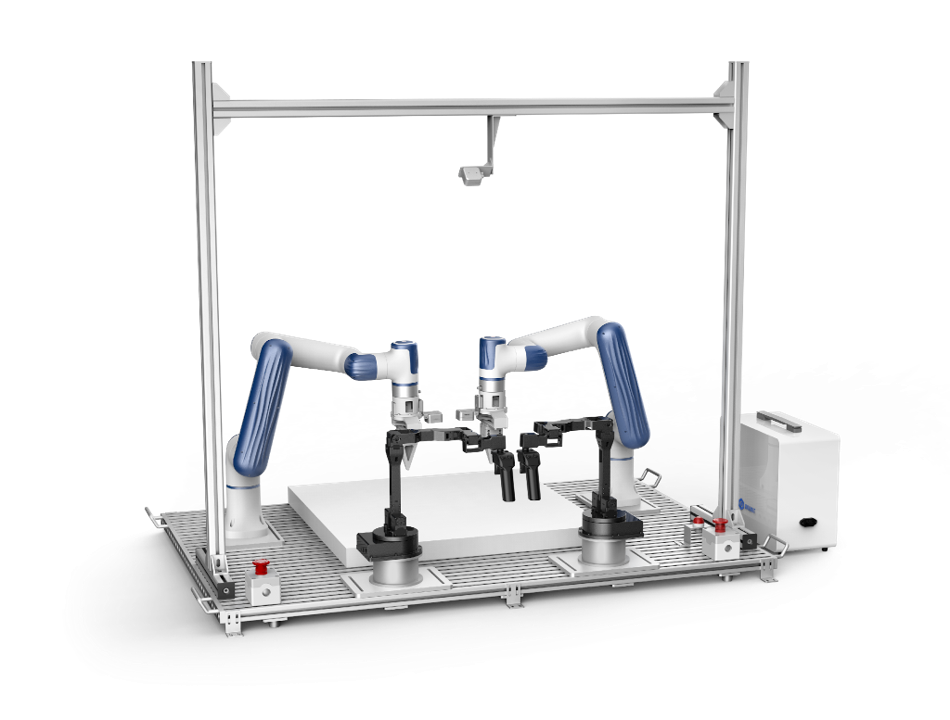
Robotic Arm — Vision-Language-Action Pick-and-Place (Dobot Nova)
Developed a Vision-Language-Action (VLA) pipeline for the Dobot Nova robotic arm, bridging camera-based perception with intelligent action execution. The system processes natural language commands, leverages real-time computer vision to detect and localize target objects in cluttered scenes, and computes precise grasp-and-place trajectories for reliable pick-and-place operations. Designed for real-world deployment in dynamic environments where object positions and workspace configurations change frequently, demonstrating end-to-end integration of language understanding, visual perception, and robotic manipulation.
Generative AI - Virtual Apparel Try-On
Developed a Generative AI pipeline that transforms a user's static image into a dynamic video, realistically simulating them wearing selected garments in motion.
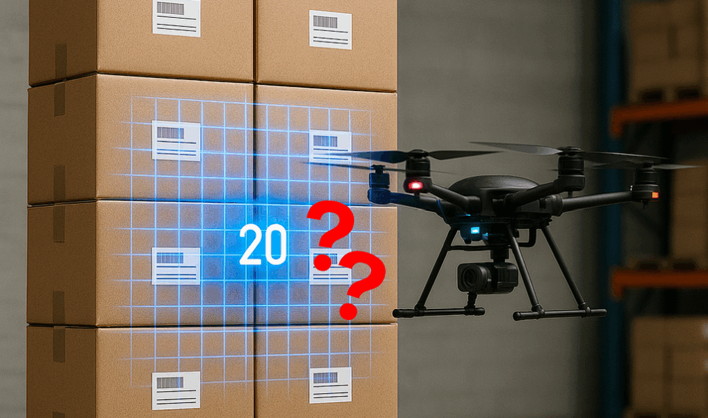
Drone-Based Box Detection & Counting
Owned the full pipeline — data collection, annotation, model training, and cloud deployment — for processing drone video feeds to detect, count, and identify missing boxes in warehouse and logistics operations. Deployed on AWS using EC2, S3, CloudWatch, and RDS.
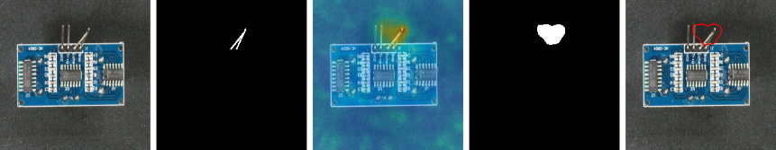
Manufacturing Defect Detection with Anomalib
Built an anomaly detection system for manufacturing defect identification using Anomalib. Customized and improved core Anomalib components to boost detection accuracy for domain-specific defect patterns, enabling automated quality inspection on production lines.
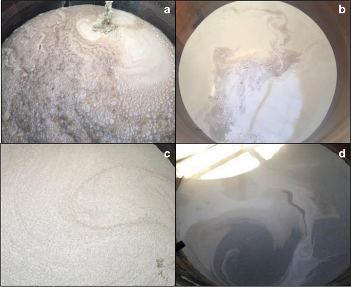
Foaming Depth Measurement for Enzyme Production
Developed a CNN and Detectron2-based computer vision system to measure the depth of foaming during the enzyme manufacturing process, enabling real-time monitoring and precise control of foaming levels for consistent production quality.

Human Pose Comparison
Compare the poses of instructor and student. Gives real-time feedback to the student to improve their form in areas like dance, yoga or other exercises and subsequently helps them understand their areas of improvement.
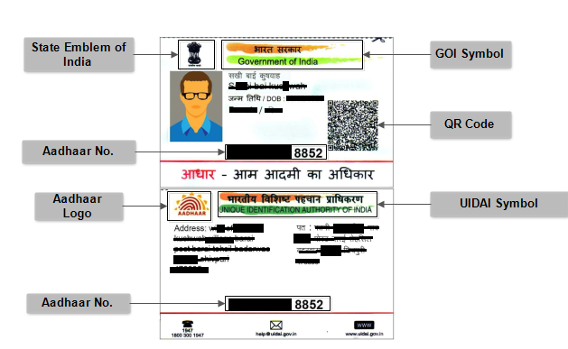
Identity Verification of Indian Aadhaar and PAN Card
Fast and accurate detection of Indian Aadhaar and PAN card from user's uploaded image, and subsequent OCR to automate retrieval of user information which is then cross-checked with user's request form in banking software.
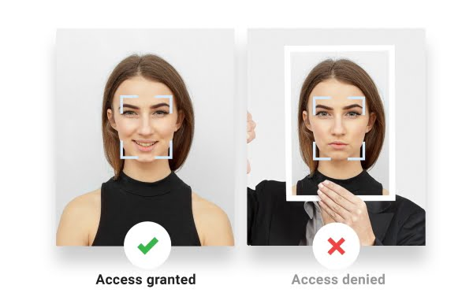
Face Liveness Detection
This project combines facial recognition with facial passive liveness detection to prevent spoofing of biometric samples in banking software.
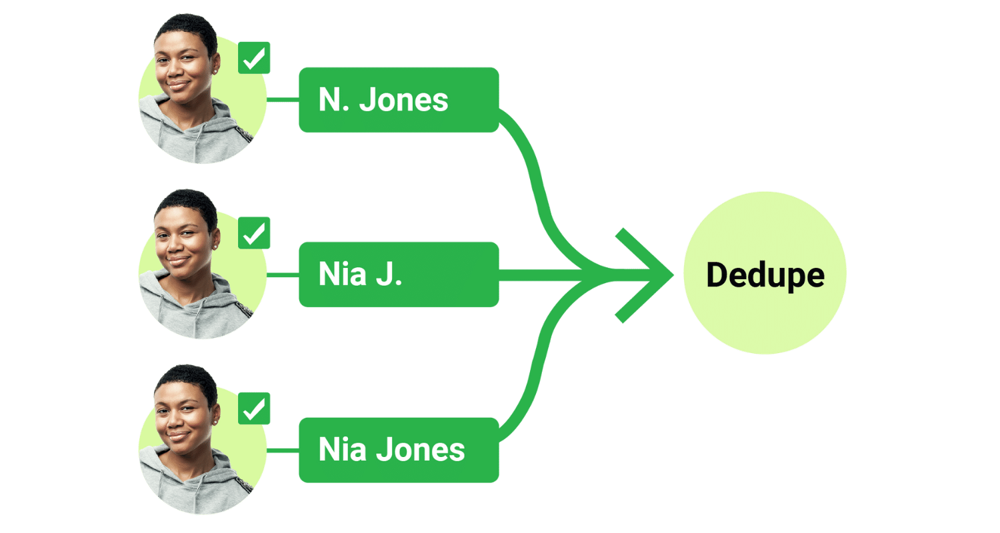
Face DeDupe
Using clustering and facial landmarks, check any new request form's user image for existence in banking database. If a match is detected but user enters conflicting details, the software warns about possible fraud.
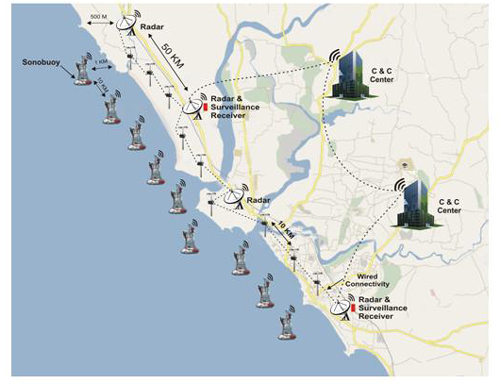
Coastal Surveillance System - Myanmar
A seamless integration of the sensors on TCP, UDP and RabbitMQ network, then processed data for sensor data fusion. Deployed in field operations for unauthorized ship detection.
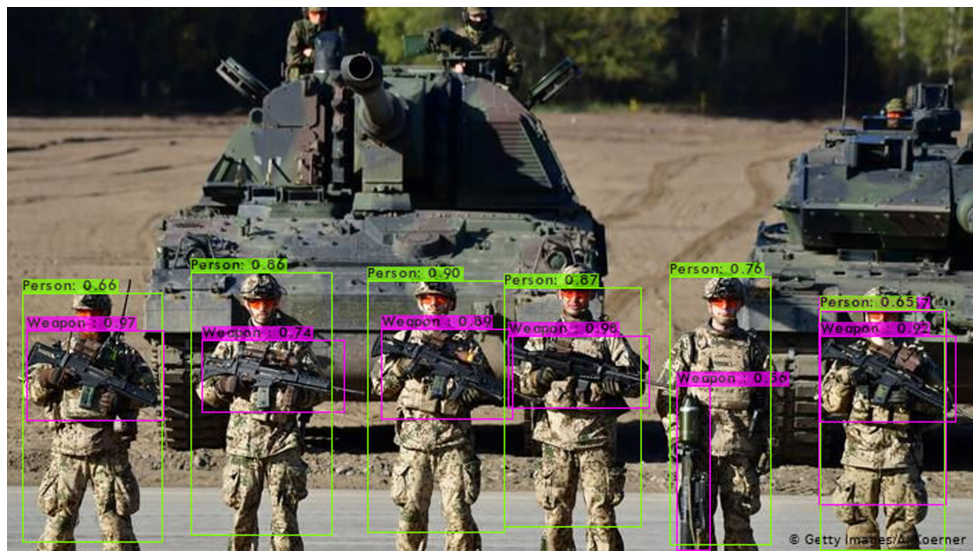
Integrated Perimeter Security System - India
A Weapon Detection Module using object detection to improve the surveillance system for real-time camera feed. Deployed in field operations for border security.
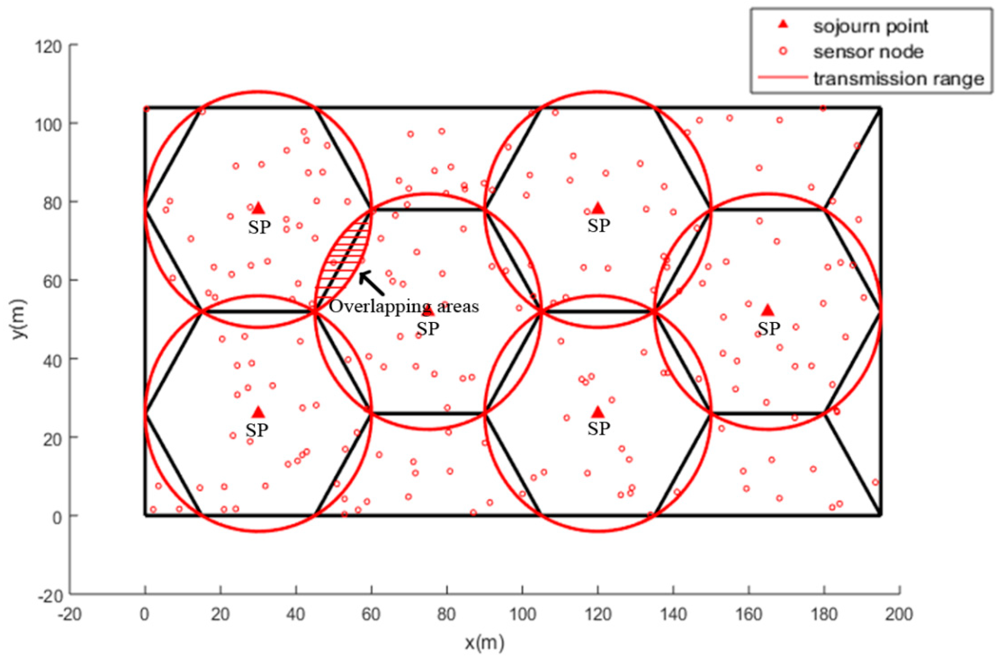
Sensor Planning Deployment
An application to determine the minimum number of sensors required for effective surveillance of a designated area.
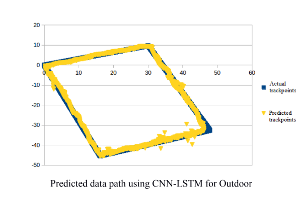
Master's Thesis: Localization using ML in Partially Dynamic Environment
Proposed and tested methodology within the framework of CNN-LSTM for real-time localization of a robot in static and dynamic environments. Improved on state-of-the-art accuracy.
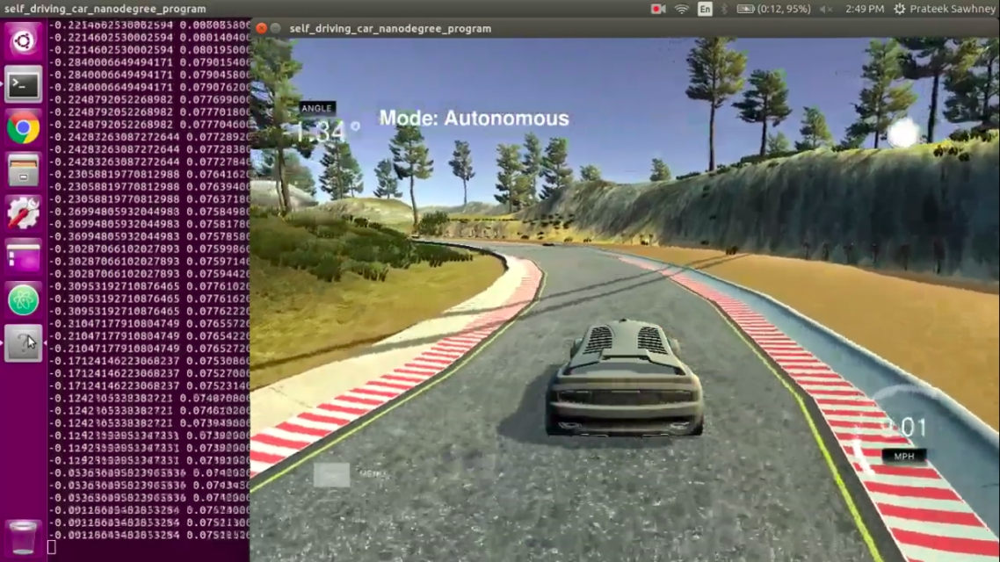
Self-Driving Car in Simulator
Nvidia-based CNN architecture for predicting Steering Angle, Throttle, Brake, Speed which are the basic parameters for driving a car. These predicted parameters are then inferred in real-time for each frame.
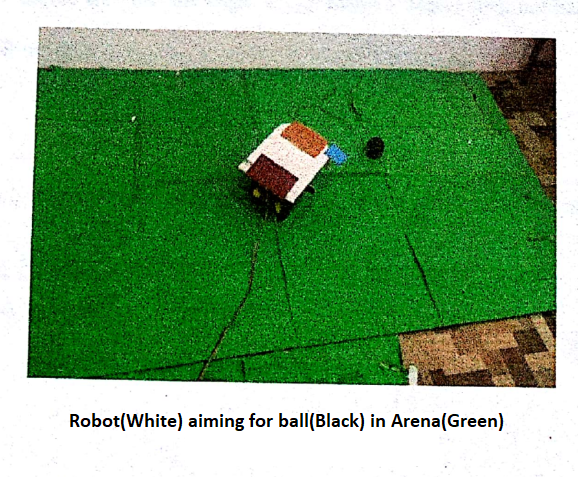
Robot Navigation using Overhead Camera and Reinforcement Learning
Real-time reinforcement learning-based solutions to make the robot move intelligently from the initial position, collect the ball from a location and score the goal.
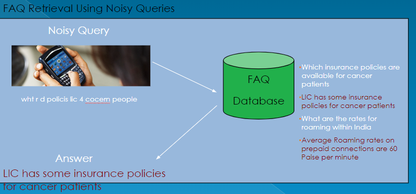
Semi-Automated FAQ-Retrieval System
An FAQ system using data mining and NLP that returns the top-10 best-matching questions for user query quickly.
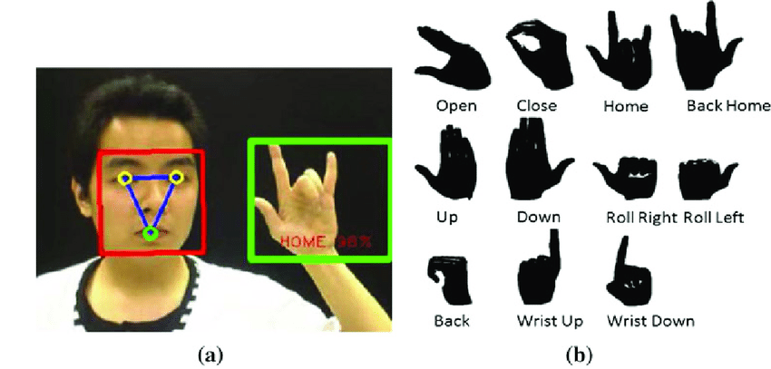
Hand Gesture Recognition
A real-time object detection of hand gestures from a finite number of gesture classes in American Sign Language.
Open Source
Tools I've built and published to PyPI — covering the full CV workflow from annotation to training to image processing.

alchemycv
Python library for streamlining computer vision workflows — image masking, edge detection, and common CV operations.
pip install alchemycv 
AlchemyAnnotate
Desktop annotation tool for drawing bounding boxes on images. Exports to YOLO, Pascal VOC, and COCO formats for model training.
pip install alchemyannotate 
AlchemyDetect
Desktop GUI for training and running inference with Detectron2 models — Faster R-CNN, RetinaNet, and Mask R-CNN with real-time loss plots.
pip install alchemydetect AlchemyCloud
Desktop editor and viewer for 3D point clouds — load PCD/PLY files, crop, downsample, measure, and export, with smooth interactive inspection.
pip install alchemycloud Contact
Let's work together
Have a project, role, or collaboration in mind? Send me an email and I'll get back to you as soon as I can.
Email Me